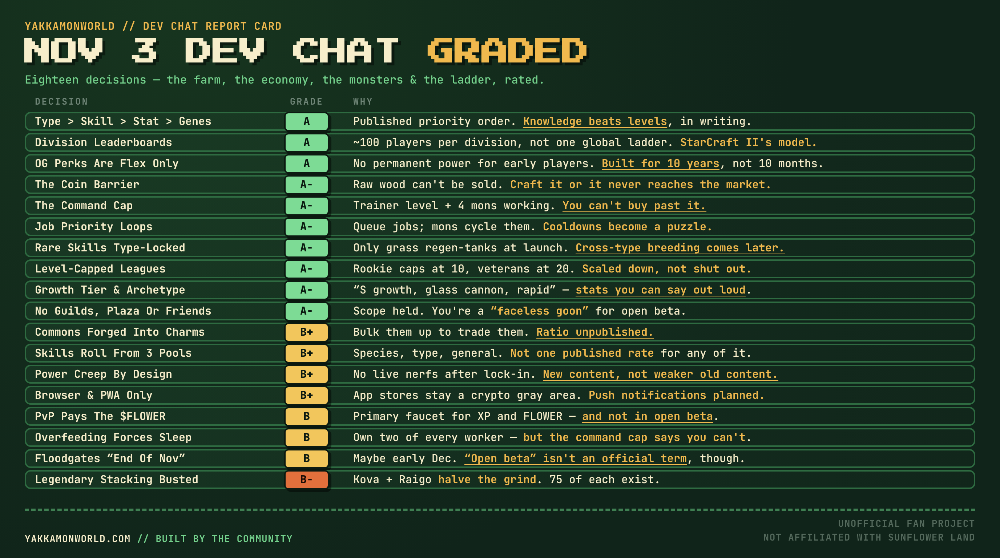

This was not a presentation. It was a developer with a build open, a screen share that half the room couldn’t see, and two and a half hours of meandering through a game that is nearly finished. “Very impromptu,’’ he said, “planned as of yesterday, running as of today.” Spencer and Matt joined partway. Adam wasn’t there, which came up every time somebody asked about a date.
And it was, by some distance, the most informative stream this project has done. The previous two gradings and the free-mint one were built on announcements. This one was built on watching someone play. You learn different things that way — mostly the things a team would never put in a roadmap post, like the fact that there is now a hard cap on how many monsters you are allowed to work at once, or that feeding a Yakkamon too much forces it to go to sleep.
So: eighteen decisions, graded A to F, in the format we’ve used since August. Nothing scored an F. One thing scored a B−, and it is the one that should worry you most if you are holding a Legendary and hoping the game around it stays fair.
The scorecard
Eighteen decisions, sorted by grade. The pattern that has held since August — game design earns A’s, distribution imports the genre’s bad habits — has broken again, but differently from last time. There is barely any distribution left to grade. What’s left is systems, and the systems are good.
| Decision | YakkamonWorld Score |
|---|---|
| Type > skill > stat > genetics, stated as a priority order | A |
| Division leaderboards instead of one global ladder | A |
| OG perks are flex, not power | A |
| The coin barrier: nothing reaches the market un-crafted | A− |
| The command cap on working monsters | A− |
| Job priority loops | A− |
| Rare skills locked to their type at launch | A− |
| Level-capped leagues in the dojo | A− |
| Growth tier, archetype and leveling type, shown on the monster | A− |
| No guilds, no plaza, no friends list at launch | A− |
| Commons forged into charms before they can trade | B+ |
| Skills rolled from species, type and general pools | B+ |
| Power creep by design, no live nerfs after lock-in | B+ |
| Browser and PWA only, no app store | B+ |
| PvP as the primary faucet for experience and $FLOWER | B |
| Overfeeding forces a monster to sleep | B |
| “Open beta” end of November, maybe early December — still no date | B |
| Legendary stacking left openly busted | B− |

The numbers, before the opinions
Nine figures came out of this stream that change something you can plan around.
- Command cap = trainer level + 4. The number of Yakkamon you may have working at once. It was seven in the demo. The developer said he will probably reduce it so the cap is simply your trainer level.
- End of November, maybe early December for what he called the floodgates opening — explicitly “not a promise.” Availability for everyone is “within this year. It won’t be next year.”
- Storage bins upgrade to 800, via a craftable storage upgrade that doubles a bin’s capacity.
- Rookie league caps monsters at level 10; the veterans league at level 20. Above the cap, your monsters are scaled down rather than barred.
- Level 51 is where the grass-only rare skill Propagate unlocks on the starter he caught — a reminder that the level ceiling is far above what open beta will show.
- Three to six months of heavy balancing after release, and then as little live balancing as they can manage.
- Four minutes for one A-Rock to produce one stone; 90 seconds of cooldown on a berry node. Real pacing, from a demo running at four times speed.
- Kova plus Raigo cuts the time to a level 30 expansion by about half, on the developer’s own estimate.
- ~100 players per division on the PvP leaderboards, with a global top 100 above them.
Part one: the economy
1. The coin barrier: nothing reaches the market un-crafted
The single most important economic rule revealed on this stream, and it was explained almost in passing while a monster chopped wood. Basic resources are not tradable. Wood, and things like it, cannot go to the market at all. To sell anything, you take it to the workshop and craft it — paying both a resource cost and a coin cost — and only the crafted good can be listed. Lumber and clay bricks were the examples. Coins come from contracts, and coins are used for “almost everything in the game.”
The developer gave two reasons, and they are different reasons. The first is botting: a script that farms wood all day produces nothing sellable, because the sellable thing needs a coin it has to earn through contracts. He was careful not to overclaim — “obviously any game is still vulnerable to sybil attack, bottable, but it makes them slow down a lot more.” The second reason is the better one. It stops people squatting on an expansion and playing extractively: you cannot park on a small farm forever, strip-mining it for sale, because coins come from contracts and contracts come from continuing to expand.
That second property is rare and valuable. Most play-to-earn economies are broken by exactly this player — the one who finds the minimum viable extraction loop and runs it forever without ever becoming a participant in the game. Tying the market to a currency that only flows toward people who keep progressing makes the extractive strategy strictly worse than just playing. It is the same instinct as the non-stacking buffs and the command cap: make the degenerate strategy unprofitable rather than banning it.
The deduction is about where this leaves the faucets. Every tradable good now requires coins, and coins come from contracts today and, per this same stream, primarily from PvP once PvP is built. PvP is not in open beta. So the early economy runs on a single faucet — the contract board — feeding every other system. If contract payouts are tuned even slightly wrong, nothing else can compensate, and the first weeks of the market will be a very thin thing. A second coin source for the farming half, even a small one, would de-risk the whole design.
2. Commons forged into charms before they can trade
Asked whether Yakkamon can be bought on the marketplace with $FLOWER, the answer came with a structure attached, flagged as current thinking that may change. Rare SFT and NFT Yakkamon trade one for one. Common Yakkamon do not — you must gather a quantity of the same monster and forge them into a charm, and the charm is what trades.
This is a sink disguised as a trading rule, and it solves a problem every creature collector with a market eventually has: commons are infinite, so a free market in commons is a market in noise. Thousands of identical low-value listings crowd out everything worth looking at, and the floor collapses to the cost of the click that caught the monster. Requiring consolidation means every charm that reaches the market has destroyed several monsters to get there, which gives commons a real floor and keeps the listing pages legible.
It also quietly supports the breeding game. If commons are consumed in bulk to make tradable goods, then the commons you breed have somewhere to go that isn’t the bin, and a breeding operation aimed at volume has an exit that doesn’t require finding a buyer for each individual animal.
Two things hold it at a B+. The ratio is unpublished — “a certain amount of him” could be three or thirty, and the entire economics of the feature live in that number. And a charm is presumably not a monster: if you forge five Spudlings into a charm and sell it, the buyer gets a tradable object, but it isn’t clear whether they get a working Spudling out the other end or something else entirely. Until that is spelled out, nobody can price the thing.
3. PvP as the primary faucet for experience and $FLOWER
Said once, in passing, and it is one of the largest structural statements this project has made: PvP “will be the primary faucet for your experience and your primary faucet for flower when it’s built out as well. That’ll be the primary way you get those things in Yakkamon.”
There is a real argument for it. It gives the competitive half a reason to exist beyond vanity, it makes the farm the thing that funds the fight rather than an end in itself, and it puts the main income stream somewhere skill-gated instead of time-gated — which is harder to automate than a gathering loop. The two halves of the game stop being parallel and start being a cycle: farm to build a team, fight to earn, earn to farm better.
But look at who the farming half recruits. Yakkamon has spent five months selling itself as an idle automation game that happens to have battles — monsters that work while you sleep, bins that fill offline, a farm you check in on. The audience that pitch attracts is not, on average, the audience that wants to grind a competitive ladder for income. Putting the primary $FLOWER faucet behind PvP tells a large part of the pre-registered base that the thing they signed up for is the unpaid half of the game.
Three more problems follow. PvP is explicitly not in open beta, so the primary faucet is missing for the first stretch of real play and the economy will be tuned without it. Making PvP the money means PvP becomes the bot target, and a bot that can run a lane-based auto-battler is a far easier thing to write than one that plays a farm well. And competitive income compounds — the players who win most earn most and buy the better monsters, which is precisely the spiral the division leaderboards elsewhere in this stream are designed to prevent.
None of that makes it wrong. It makes it the decision most likely to need revisiting, and the one that should come with a published split: what share of $FLOWER emission is PvP, what share is farming, what share is contracts.
4. Power creep by design, and no live nerfs after lock-in
The most considered answer of the stream, in response to a question about how often rebalancing would happen. The plan: balance heavily for the first three to six months, then stop. The reasoning was explicit and specific to this genre — “especially in NFT gaming in the space that we’re in, balancing is harmful if we do it live.” They reserve the right, but once the mathematical framework is locked, the preference is to release new content that responds to existing content rather than nerf what people already own. Legendaries will always remain good. Rares will always remain good. And power creep is treated as inevitable and planned for rather than fought, with breeding as the engine: two average parents occasionally roll higher, and that creeps the ceiling up over time toward a cap.
He is right about the core problem. In a normal game a nerf is a patch note. In this one a nerf is a write-down of an asset somebody bought, and a studio that nerfs a Legendary once has told every holder that the thing they own is held at the developer’s pleasure. Committing publicly to not doing that is worth more than any individual balance decision.
He is also right that games which refuse to accept power creep tend to die of it anyway — either by bolting everything to a fixed framework until new content can’t be interesting, or by shipping one piece of creep so large it erases everything that came before.
The deduction is the tension he didn’t quite address. “Your Legendaries will always remain good” and “the ceiling creeps upward through breeding” are in direct competition. Both can be true only if the creep is slow enough that a fixed-supply Legendary stays relevant for years, or if Legendaries creep too — and if they creep through breeding, the Genesis Legendaries stop being the best of their kind, which is the thing their scarcity was sold on. There is a version of this where the answer is “Legendaries remain good at the thing they do” rather than “remain the strongest,” and that distinction is worth making before launch rather than during the first argument about it.
Part two: the farm
5. The command cap on working monsters
The genuine surprise of the stream, and a reversal. Your command cap is the number of Yakkamon you may have working on your farm at one time. In the demo it rose from six to seven when the trainer leveled up, and the formula was given as base trainer level plus four — with the developer adding that he will probably cut the plus four, making your command cap simply your trainer level.
Trainer level comes from battling. So the chain is: fight, level up, command more workers, produce more, afford a better team, fight better. That is a real loop, and it is the first mechanism that makes the battling half mandatory for a farmer rather than optional. It also gives the trainer level — which until now was a number with no stated purpose — the most important job in the game.
What earns the grade is what it does to money. The same stream confirmed you cannot command a Yakkamon above your trainer level: buy a level 99 monster on the marketplace and you have “a little bit of grinding to do before you can get full benefit.” Combined with the cap on headcount, this is the strongest anti-whale mechanism the game has. You cannot buy fifty monsters and out-produce a player who has played longer, because you cannot command fifty monsters, and you cannot command the good ones you bought until you have earned the right. Capital converts into power at a rate the game controls. That is the correct answer to the hardest problem in this genre, and this team keeps arriving at it — non-stacking buffs, type locking, rarity-scaled breeding caps, and now this.
Two deductions. This is now the fourth simultaneous cap on a farm, alongside bins, beds and tiles, and four interacting ceilings is a lot of invisible friction for a new player who just wants to know why their monsters are idle. And announcing a cap while saying you intend to tighten it is awkward: trimming the plus four is a roughly 40% cut to early-game capacity at trainer level 10, and that is the sort of change that should land before people build plans around the current number.
6. Job priority loops
The mechanic the demo spent the longest on, and the one that most clearly separates this from its sibling game. A Yakkamon does nothing unless assigned. You drag jobs above a line to queue them, and the monster cycles the queue automatically — gather berries, and when berries go on cooldown, fall back to growing crops; regenerate the tree when there is nothing else to do. “This is very much a job management game, a team Yakkamon management game.”
This is good idle design for a specific reason: it makes cooldowns into a puzzle instead of a wait. A node on a 90-second timer is dead time unless the monster standing next to it has somewhere else to be, and the queue is what converts that dead time into throughput. It rewards knowing your own farm’s rhythm without demanding you be present for it, which is exactly the line an idle game has to walk.
It also quietly sets up the specialization argument the developer made a few minutes later: once you are optimizing queues, you start noticing that you are much better at one chain than another, and that is the pressure that makes a player-to-player economy form at all.
The deduction is interface, and the developer would probably agree — most of what was shown is scheduled for replacement. A queue system where the ordering rule is “above the line” needs to make that line and its consequences obvious, and it needs to tell you when a monster is idle because every job in its queue is on cooldown. On a farm with four capacity ceilings, “why is this one doing nothing” is the question the UI has to answer before anything else.
7. Overfeeding forces a monster to sleep
A small, strange mechanic with large consequences. Feeding a Yakkamon fills a bar that runs red to yellow. Once it is full yellow, that monster must sleep next — it can no longer regain energy from food, and sleeping “takes a long time.” The developer drew the conclusion himself: you will want multiple redundancies for the same role, two Spudlings with a good growing buff, so one works while the other is unconscious.
As an economic engine this is effective. It converts a stamina system into permanent demand for breadth, which means demand for the marketplace, which means the specialization argument has somewhere to land. It also stops food from being an infinite energy drink, which would have collapsed the whole pacing layer.
As a player experience it is the roughest thing shown. The mechanic punishes the most intuitive action in the game — feeding your creature — with a long enforced downtime, and the signal for it is a color change on a bar whose meaning is not self-evident. Worse, it collides with the command cap: the system tells you to own two of every worker, while a different system caps how many workers you may command. A player with seven command slots and a roster built for redundancy is running a farm half-asleep by design, and both of those rules were presented in the same hour as good news.
That is fixable and probably will be — the numbers are mid-alpha and the UI is being rebuilt. But the interaction between the two caps is a design question, not a tuning question, and it is worth asking before the balance pass locks.
Part three: the monsters
8. Growth tier, archetype and leveling type, shown on the monster
At the egg reveal three weeks ago the team said unique stats were not on the NFTs yet and would get their own reveal closer to launch. This was effectively that reveal, delivered by accident while catching a starter. Every Yakkamon carries three legible properties on top of its stats:
- Growth tier — how many stat points it gains per level. The one he caught rolled S, described as a very low-percentage outcome.
- Archetype — where those points go. Glass cannon puts more into attack than defense and more into speed than HP, every level.
- Leveling type — how fast it levels at all. Rapid was the roll, and it is what made the catch a good starter rather than just a strong one.
Underneath those sit the genetics and training values described back in August. The design is better than it sounds, because these three are named rather than numeric. “Glass cannon, S growth, rapid” is a sentence a player can hold in their head and trade on, where “+1.4 attack per level” is a spreadsheet. Naming the archetypes is what will let a marketplace form around individuals instead of species, and it is what makes two of the same monster genuinely different objects rather than a duplicate.
It also gives breeding a legible target. You are not breeding for a number you cannot see; you are breeding for a growth tier and an archetype, and you can tell someone what you are hunting for in four words.
The deduction is accumulated complexity. An individual Yakkamon is now the product of species, rarity, type, stats, genetics, training values, growth tier, archetype, leveling type and a rolled skill set. That is ten axes, most of them rolled, and it sits uneasily beside the design principle this same developer stated in August: one RNG component plus one fixed component, and explicitly not stacking RNG on RNG. Depth is good. Ten rolled axes is not depth, it is noise, unless the interface makes the three or four that matter immediately obvious — and the screen he opened to show it was, in his own words, janky and scheduled for replacement.
9. Skills rolled from species, type and general pools
Each individual rolls its skills from three sources: its species pool, its type pool, and a general pool — and the skills themselves have rarities, common through legendary. Tackle is a general-pool basic anyone might learn. Propagate is a grass-only rare that unlocked at level 51 on the monster he caught. Two of the same species, caught the same day, will not have the same kit.
Combined with the archetype system this is what makes the hunt worth repeating. There is a reason to catch another Slowly, and a reason to look closely at someone else’s. It is also the mechanism behind the single best line of the stream about combat: a well-built monster ten levels below its opponent can win, because the kit matters more than the level.
The B+ rather than higher is the same worry as above, concentrated. Rolled skills on top of rolled stats on top of rolled growth is a lot of lottery for an object you are expected to invest months in, and no rates have been published for any of it — not the skill rarity distribution, not the growth tier distribution, not what “very low percentage” means. Those numbers are the difference between a deep system and a slot machine, and every one of them is currently unpublished.
10. Rare skills locked to their type at launch
A scope decision with teeth. Cross-type breeding — moving skills across type lines — is planned, but not for first release. At launch, rare skills stay in their own type: only grass types will have Propagate, which means, as the developer put it, only grass types can regen-tank.
Holding this back is right twice over. It protects type identity at the moment players are learning what types mean, so the early meta is legible rather than a soup of borrowed abilities. And it keeps a genuinely exciting system in reserve for a content release, which is exactly the “respond to existing content” strategy the balancing answer described — cross-type breeding is new power that makes old monsters more interesting rather than obsolete.
The deduction is that it compounds. The farm already gates resources behind types, so a narrow roster caps production. Now combat gates entire tactical roles behind types too: no grass type, no regeneration tanking, no substitutes available. Breadth was already the dominant strategy; this makes it close to mandatory, and a player who gets unlucky with early catches in a type they need is locked out of a role until they fix it. That is fine if hunting is reliable and cheap. It is punishing if it isn’t, and nobody outside the alpha knows which.
11. Legendary stacking left openly busted
The lowest grade on the board, and it was volunteered rather than extracted. Running Kova and Raigo together is, in the developer’s own words, “absolutely busted — you just farm so fast. I think it cuts down the time to level 30 expansion by like half.” Kova’s ability means monsters around it don’t expend stamina while working, which removes the sleep cycle, the food cost and the redundancy requirement all at once. Separately, alpha testers have been arguing that Raigo — already the strongest of the six — needs a buff, and the developer said it might get one.
Set against the rest of the stream, this is the decision that doesn’t fit. Everything else here is built to stop capital converting into power: the command cap, the trainer-level gate on commanding bought monsters, non-stacking buffs, the coin barrier. And then the two assets distributed by mint luck and leaderboard rank halve the game’s central grind when held together.
Note what the forced-sleep mechanic becomes in that light. For almost everyone it is the rule that forces you to own two of every worker and keeps the marketplace alive. For a Kova holder it does not apply. The economic pressure that shapes the entire mid-game is simply switched off for the holders of a fixed-supply NFT — and “Legendaries will always remain good” is now policy, so it stays off.
The “rocket boots” defense offered on the stream — if everything is overpowered, nothing is — is a real design philosophy and it works in games where everyone can get the rocket boots. There are 75 Kova and 75 Raigo in existence. This is not a case of everything being busted; it is a case of two things being busted and 11,000 players not having them. The fix does not have to be a nerf, which the balancing policy rules out anyway: cap the stacking, make the auras exclusive, or give the farming half a non-Legendary route to a similar effect. Any of those preserves the Legendary’s value while stopping it from deleting a core system for a hundred wallets.
Part four: combat and competition
12. Type > skill > stat > genetics, stated as a priority order
Asked directly whether a stronger opponent is an automatic loss, the answer was a ranked list: type advantage first, skill advantage second, stat advantage third, genetics after that, with passives below. Two grass monsters destroying a higher-health A-Rock was the live demonstration, and the written-out version was blunt: a well-built lower-level team beats a higher-stat one.
Publishing a priority order is a small act with large effects. It tells every player what to spend their time on, it tells the market what to pay for, and it is a commitment the team can be held to — if stats start deciding fights in six months, everyone will know the order was violated. Most games leave this implicit and let the community reverse-engineer it over a year.
More importantly it is the same anti-whale position again, now in combat. Levels are bought with time or money; type coverage and kit construction are bought with knowledge. Putting the two knowledge-based factors above the two purchasable ones is the single clearest statement of values in the game, and it is consistent with the farm side where breadth beats depth for exactly the same reason.
No deduction. It is a clear, falsifiable, player-serving commitment, stated plainly in response to a question rather than in a marketing post.
13. Level-capped leagues in the dojo
The dojo — behind placeholder UI the developer apologized for twice — runs leagues defined by level caps. In the rookie league, monsters above level 10 are capped; in the veterans league, above level 20. There are daily fights against teams you have already beaten, which currently means PvE grinding against the AI squads the world has thrown at you.
Capping rather than excluding is the right technical choice, and the difference matters. An exclusion bracket means maintaining a separate low-level roster to compete in it, which is both tedious and the mechanism behind every smurfing problem in competitive games. Scaling the monster down means your actual collection is your entry ticket at every tier, and a league becomes a format you play rather than a stable you maintain.
It also gives low-level play a permanent purpose. In most collectors the early monsters are disposable — outgrown and shelved. Here a level-10 format means a well-built early team stays competitively relevant forever, which makes those first catches worth optimizing rather than replacing.
The deduction is that the rewards are undefined. A league with daily fights is a content treadmill, and whether it is a good one depends entirely on what it pays and whether that pay is competitive with farming — which, given PvP is meant to be the primary faucet, is the whole question. Right now it is a structure with no economy attached to it.
14. Division leaderboards instead of one global ladder
The clearest borrowed idea of the stream, and correctly borrowed. There will be no single global PvP ladder. Instead, players are split into divisions of roughly 100 of similar rating, explicitly modeled on StarCraft II’s system, with a global top 100 sitting above and separate global tournaments.
The reasoning given was about legibility — you see the hundred people you are actually competing with rather than a million you are not — and that is the smaller half of the benefit. The larger half is motivational. A global ladder tells 99% of its players that they are nobody, every time they open it. A division tells almost everyone that they are four wins from the top of something. It is the difference between a leaderboard that retains players and one that quietly teaches them to stop looking.
For this game specifically it does something else. If PvP is the primary income faucet, a single global ladder would concentrate rewards on a few hundred players and leave everyone else earning nothing from the half of the game that is supposed to pay. Divisions let the reward curve be broad without being flat.
No deduction, and credit for taking the lesson from a fifteen-year-old game that got it right rather than from the nearest competitor.
Part five: scope and trust
15. OG perks are flex, not power
Asked what early-access trainers get, the answer was a short essay and the most important thing said on the stream. Yes, OG status will be recognized. No, it will not be “massively powerful.” It is “more going to be flex — we want you to be able to flex on people.” Plus the natural status of having caught monsters from seasons that have since ended.
The reasoning was unusually direct about the genre’s failure mode: games sell Genesis collections on scarcity and fear of missing out, don’t balance around them, and one to three years later there is “only a small hardcore audience of those first players left because no one else can get into it.” Against that, the stated goal is a game that runs for ten years, which requires new players to be able to arrive and compete.
Saying this now, to an audience largely composed of people who spent two months climbing a leaderboard for exactly this kind of advantage, takes some nerve. It is also the only sustainable position: every unit of permanent power handed to the founding cohort is a tax on everyone who arrives later, and a game that taxes new arrivals runs out of them.
No deduction — but it sharpens the Legendary problem above. “OG perks are cosmetic” and “two Legendaries from the Genesis distribution halve the central grind” are not consistent with each other. The principle stated here is the right one; the Kova-plus-Raigo stack is the place it isn’t being applied.
16. No guilds, no plaza, no friends list at launch
A clean sweep of deferrals, each with a reason. Guilds and factions: not at launch, because “I’ve yet to play any game that does a guild or a faction as well as a web two game in this space” — the plan is to improve factions on Sunflower Land first and carry the lessons over. A plaza and trainer avatars: not yet, no trainer identity, “you’ll be a little bit of a faceless goon for open beta,” with roadmap plans. Friends lists, messaging, 2v2: wanted, back burner, post-beta. The stated priority is a game that is “functional as a single player experience with some PvE and some trading” before any of it.
This is scope discipline of a kind that is rarer than it should be, and the guild answer in particular is the right instinct: shipping a mediocre guild system is worse than shipping none, because you then have to maintain it while building the good one. Testing the idea in the game that already has the players is free research.
The deduction is a genuine risk rather than a quibble. For a web3 game the community is the marketing, and social features are what convert a player into a member of something. “Faceless goon” is an honest description and also a retention problem: open beta will be the moment the largest number of people ever look at this game at once, and they will look at it alone. A friends list is not a core system, but it is the cheapest retention mechanic in existence, and shipping it later means re-acquiring the people who drifted off in the meantime.
17. Browser and PWA only, no app store
Confirmed again, and with the reason stated plainly: the game is a browser game you save to your home screen, and app stores remain “a really gray area when it comes to NFTs or any kind of blockchain or cryptocurrency” — not a space the team is confident moving into. Push notifications are planned, which Spencer named as the main thing a PWA usually gives up.
Consistency is worth something here: this is the same answer given in August and in September, and the team has not been tempted to promise an app it cannot ship. The reasoning is also simply correct — a blockchain game with tradable assets is one policy review away from removal, and building a distribution channel on that foundation is a poor use of a year.
Closing the push-notification gap is the right priority, because that is the feature an idle game actually needs. A farm that fills its bins while you are away is worth a notification; most other things are not.
The deduction is that the PWA path has real costs the team should plan around rather than wave at. Installation is a multi-step flow most people have never performed, iOS web push requires the install before it works at all, and storage eviction on mobile browsers is a live hazard for a game holding local state. None of that is a reason to go to the app stores. All of it is a reason to have an onboarding flow built specifically for it, and that has not been mentioned.
18. “Open beta” end of November, maybe early December — and still no date
The dates answer came in three pieces and got less certain as it went. First, unprompted, in the opening minutes: systems are being fine-tuned for open beta and “I think we’ll be looking towards the end of November, maybe early December for the floodgates. That’s not a promise.” Later, asked directly: a date will be announced “soon TM,” availability for everyone is “within this year. It won’t be next year,” but there is a lot to fix first. And then, asked what open beta even means, a walk-back: “that’s not an official term,” there will be a point where the game opens to the community, it might be the week before full release or two weeks, it might be early access, “I’m using the term loosely… Adam is the one who will be able to answer those kind of questions.”
The underlying honesty is good and consistent with this team’s record — they have refused to commit to a date for three months rather than commit and slip, and “within this year, not next year” is a firmer bound than anything said in October. The reason given is the right one: the developer can avoid the edge cases in a demo, real players cannot.
But the terminology is now a mess, and it is the one thing on this list that affects what players do this week. The site has been carrying early access aimed at the end of November since the egg reveal. This stream introduces a stage called open beta at the same date, then disowns the name, then suggests it might be the same thing as early access, or a week or two before it, and refers the question to someone not present. Meanwhile the leaderboard lock — the deadline that permanently decides trainer numbers, Genesis monsters and access waves — is pegged to early access, and nobody watching could now say with confidence which event that is.
Two sentences from Adam would fix it: what the stages are called, and which one the lock is measured against.
What I’m not grading
A stream this loose leaves a lot of texture that isn’t a decision. Briefly: storage bins upgrade to 800 through a craftable item that doubles capacity, so the bin ceiling is now a resource problem rather than a hard wall. Trees and buildings cannot currently be moved and the team is undecided; decorations you buy can be placed freely. Yakkamon traded out of the game keep everything — level, stats, genetics, training values — which makes a sold monster a real object rather than a reset one. Season 0 auctions will include new NFT monsters, alongside competitions, raffles, PvE rewards, PvP rewards and “things that reward you for being a whale and supporting the game.” The chapter model will not be Sunflower Land’s ticket grind, but something adapted to monster raising and PvP. VIP will exist in some form; lifetime VIP probably won’t, because it becomes a liability five years in. The pre-registration starter eggs are fixed, not chosen, and the developer believed the tier order runs Raigo, then Kova, then Salu — while saying twice he wasn’t certain, so treat that as unconfirmed. Fruit no longer feeds monsters; it is for buffs now, a change that happened quietly enough that the developer forgot it mid-demo and had to correct himself. And Matt has been shipping skill changes straight from alpha feedback, including on skills the testers disliked.
One process note. Spencer came back from three weeks away to “almost an entirely different game” — systems rebuilt entirely, multiple times, since he left. That is the single most informative sentence about where this project actually is. It is moving extremely fast, which is why the demo was full of placeholder screens, and it is also why nobody should treat any specific number from this stream as final.
What this does to my own calls
One of our gameplay pages was wrong, and is now fixed. Since September, The Work Cycle has said there is no cap on how many Yakkamon can work at once, quoting the free-mint stream directly: “as many Yakkamon as you have can be working at once.” The command cap replaces that. The page is corrected in place with the new rule and the old position noted, which is what our corrections policy calls for on an evergreen reference page rather than a dated article.
“Breadth beats depth” keeps getting stronger, and it is now four systems deep. We first argued it in August from type locking alone, and it has since been reinforced by non-stacking buffs, by rarity-scaled breeding caps, and now by two more: rare skills locked inside their types, and a forced-sleep mechanic that makes duplicates of a role mandatory. If you are planning a roster, this is the most load-bearing conclusion on this site and nothing has contradicted it in three months.
Our bins-and-beds ceiling analysis needs a fourth item. In September we called beds the third capacity ceiling after bins and tiles, and said the bed queue was the first concrete valuation anchor for Kova’s ability. Both still hold, and the command cap now sits above all three as the hardest of the four — it is the only one you cannot buy your way past.
The battle-items worry from September got quieter, not louder. We flagged that items deciding fights would be “wearable gear by another name,” contradicting the no-gear principle. This stream’s priority order puts type and skill construction above everything, with items unmentioned, which suggests they are tactical rather than decisive. Provisionally, that worry is receding.
And the thing we got wrong about this stream series: we assumed the valuable ones would be the announcement streams. Three graded announcement streams produced less usable mechanical detail than one impromptu session with a build open. If the team is reading, the lesson is that the unscripted demo is the format that works.
What to do this week
- Stop planning around a monster count and start planning around a trainer level. The command cap means your early farm is capped by how much you battle, not by how many monsters you collect. If you were planning to arrive with a large roster, the binding constraint is now the number next to your name.
- Plan for two of each worker, not one. Forced sleep after feeding makes a single specialist a single point of failure. Breadth already beat depth for farming; now it beats depth for uptime too.
- Your rank still matters, and the lock is still the deadline. Nothing in this stream changed the leaderboard’s role: it decides your trainer number, your Genesis monster and your access wave, and it finalizes shortly before early access — which, per this stream, is somewhere around the end of November or early December. See the dates.
- Don’t read demo pacing as real pacing. Four minutes for one stone and 90 seconds on a berry node are real numbers, but they were shown at four times speed with dev cheats on. The economy is still being balanced and the developer said the first three to six months will change a lot.
Questions for the next dev chat
- Is the command cap staying at trainer level plus four, or being cut to trainer level — and which number should players plan around?
- How many commons does it take to forge a tradable charm, and what does the buyer receive?
- What share of $FLOWER emission goes to PvP, farming and contracts — and what is the coin faucet before PvP exists?
- Will Kova’s stamina aura and Raigo’s stack as shown at launch, given the balancing policy says they won’t be nerfed afterward?
- What are the published rates for growth tier, archetype and skill rarity rolls?
- What do the dojo leagues actually pay?
- Is “open beta” the same event as early access, and which one does the leaderboard lock against?
- If Legendaries “always remain good” while breeding creeps the ceiling upward, do Legendaries creep too?
My overall read
For three streams the pattern was that this team designs games well and distributes them badly. The distribution is finished now — the mint happened, the eggs opened, the leaderboard is winding down — and what this stream shows is the part they were always good at, with the brakes off. Almost everything here is a systems decision, and almost all of them are correct.
More than that, they are correct in the same direction, which is the thing worth noticing. The command cap, the trainer-level gate on commanding bought monsters, the coin barrier, the type-over-stats priority order, the division ladders, the refusal to give the founding cohort permanent power — every one of those converts an advantage that could be bought into an advantage that has to be earned. Six independent systems, designed at different times by different people, all pointing the same way. That is not luck; that is a team with a shared position on what kind of game this is.
Which is exactly why the Kova-and-Raigo stack stands out so badly. It is the one place where the thing you own beats the thing you know, it was disclosed cheerfully rather than defensively, and the balancing policy announced in the same hour means it is scheduled to stay that way. Every other anti-whale rule in this game is load-bearing; this one exception is sitting on top of all of them.
The rest of the worry list is small and mostly a UI problem. Four capacity ceilings, ten rolled axes per monster, a feeding mechanic that punishes feeding, a job queue whose idle state is invisible — these are all legible systems presented through screens their own developer called janky and scheduled for replacement. Spencer and Matt are rebuilding the battle screens and the gym. If that work lands, most of this list resolves itself.
What hasn’t changed in four months is the honesty, and it is still the best predictor this project has. A developer who opens with “this isn’t rigged for dev” and then says “I’ve gotten super lucky,” who admits the UI is placeholder four separate times, who volunteers that his own Legendaries are busted, and who answers a question about dates with “that’s not an official term and Adam will have to tell you” — that is a team that has decided it would rather be trusted than impressive. With the floodgates somewhere around a month away, that remains the most valuable thing they own.